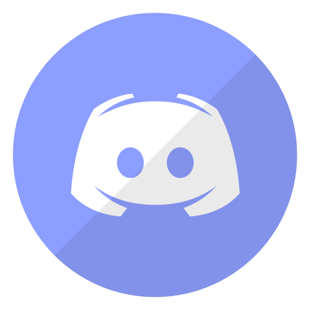

Instagram est une application, un réseau social et un service de partage de photos et de vidéos fondée et lancée en octobre 2010 par l'Américain Kevin Systrom et le Brésilien Michel Mike Krieger. Disponible sur Android, iOs et Windows Phone ainsi que sur ordinateurs avec des fonctionnalités réduites.
Instagram revendique plus d'un millards d'utilisateurs dans le monde, chaque utilisateur possède un "mur" dans lequel il va pouvoir afficher les diverses photos et vidéos prises et modifiées via l'application.
Télécharger Instagram
Instagram est une application, un réseau social et un service de partage de photos et de vidéos fondée et lancée en octobre 2010 par l'Américain Kevin Systrom et le Brésilien Michel Mike Krieger. Disponible sur Android, iOs et Windows Phone ainsi que sur ordinateurs avec des fonctionnalités réduites.
Instagram revendique plus d'un millards d'utilisateurs dans le monde, chaque utilisateur possède un "mur" dans lequel il va pouvoir afficher les diverses photos et vidéos prises et modifiées via l'application.
Télécharger Instagram
 Twitch est un service de streaming et de VOD de jeu vidéo, de sport électronique et d'émissions apparentées lancé en juin 2011. Le site a été créé afin d'avoir un site consacré à la branche jeux vidéo de Justin.tv, qui était la partie la plus populaire du service. Le nouveau site va alors surpasser son parent, qui ferme en août 2014, pour que l'entreprise se concentre essentiellement sur Twitch. Une application est disponible sous Android & iOs.
Entre 2016 et 2017, elle compte plus de 15 millions de visiteurs uniques par jour.
Télécharger Twitch
Twitch est un service de streaming et de VOD de jeu vidéo, de sport électronique et d'émissions apparentées lancé en juin 2011. Le site a été créé afin d'avoir un site consacré à la branche jeux vidéo de Justin.tv, qui était la partie la plus populaire du service. Le nouveau site va alors surpasser son parent, qui ferme en août 2014, pour que l'entreprise se concentre essentiellement sur Twitch. Une application est disponible sous Android & iOs.
Entre 2016 et 2017, elle compte plus de 15 millions de visiteurs uniques par jour.
Télécharger Twitch
 Canva est un site Web simplifié pour outils de conception graphique, fondé en 2012. Il utilise un format glisser-déposer et permet d'accéder à des photographies, des images vectorielles, des graphiques et des polices de caractères. Il est utilisé par les non-concepteurs ainsi que par les professionnels. Une application est disponible sous Android & iOs.
A sa première année, Canva avait déjà plus de 750 000 utilisateurs.
Télécharger Canva
Canva est un site Web simplifié pour outils de conception graphique, fondé en 2012. Il utilise un format glisser-déposer et permet d'accéder à des photographies, des images vectorielles, des graphiques et des polices de caractères. Il est utilisé par les non-concepteurs ainsi que par les professionnels. Une application est disponible sous Android & iOs.
A sa première année, Canva avait déjà plus de 750 000 utilisateurs.
Télécharger Canva

Discord est un logiciel propriétaire gratuit de VoIP conçu initialement pour les communautés de joueurs. Il fonctionne sur les systèmes d’exploitations Windows, macOS, Linux, Android, iOS ainsi que sur les navigateurs web.Le 16 octobre 2018, l'application se voit dotée d'un magasin en ligne de jeux vidéos.
Discord a atteint les 250 millions d'utilisateurs en 2019.
Télécharger Discord
 Facebook Messenger est un système de messagerie instantanée créé par la société Facebook, et incorporé au réseau social Facebook.L'application, disponible sous Windows ou bien sous divers systèmes d'exploitation mobile, permet aux membres du réseau social de dialoguer avec leurs contacts sans être forcément connectés au site web.
Messenger compte environ un milliard d'utilisateurs.
Télécharger Messenger
Facebook Messenger est un système de messagerie instantanée créé par la société Facebook, et incorporé au réseau social Facebook.L'application, disponible sous Windows ou bien sous divers systèmes d'exploitation mobile, permet aux membres du réseau social de dialoguer avec leurs contacts sans être forcément connectés au site web.
Messenger compte environ un milliard d'utilisateurs.
Télécharger Messenger